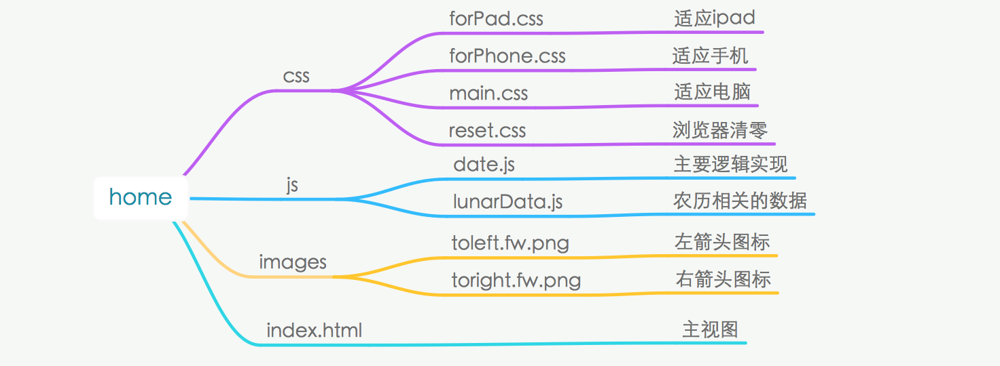
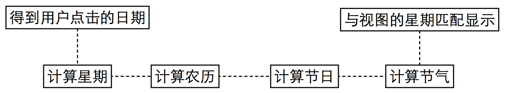

万年历的js实现
西安电子科技大学 周爱宇
产品概况
- 原生js完成，无其他框架类库
- 支持1950年到2050年的公历、农历、节气、国际节假日查询
- 电脑端Google Chrome浏览器、Safari测试通过
- 手机端小米3自带浏览器、vivoY15t自带浏览器测试通过
工程结构

总体设计思路
做出视图，当用户操作时，js更新视图的显示。先得到每一天是星期几，然后计算这一天的农历、节气、节假日等信息，最后响应用户的操作和视图的星期对应显示出来。
流程图如下：

模块详细设计
计算星期
js提供了日历类Date，用其getDay()方法可以直接由公历日期得到星期。
计算农历
查阅了一些资料，农历的计算没有现成的公式，受月球轨迹的影响，每月的天数，有没有闰月，闰月有多少天等关键信息都在变化。最准确的农历时间应该由天文台的观测得到。因此这里考虑直接使用查表法，即将每一年的关键数据存在程序中。
[2014, 29, [29, 30, 29, 30, 29, 30, 29, 30, 30, 30, 29, 30], 9]
//2014表示是农历2014年，29表示闰月是29天，数组表示1到12月每月天数，9表示闰九月。
之后根据这些关键信息计算农历：
- 已知1950年2月17号是农历1950年正月初一
- 将要计算的日期与1950年2月17号相减得到两者相差的天数
- 将相差的天数减去每一年的总天数---->得到是农历的哪一年
- 将不足一年的相差天数减去当年每个月的天数---->得到是农历的哪一月
- 剩余的天数---->得到是农历的哪一天
计算节日
将公历节日和农历节日都记录在程序中，在计算时读出就好。
["2.14","情人节"]
//2月14号是情人节
计算节气
节气的计算和农历计算一样受到月球的影响，有一些复杂。查阅了一些资料，大致有4种实现方法。
- 公式计算法
通用公式：[Y*D+C]-L
公式解读：年数的后2位乘0.2422加3.87取整数减闰年数。20世纪C值4.6295， 21世纪C值=3.87，22世纪C值=4.15。
举例说明：2058年立春日期的计算步骤[58×.0.2422+3.87]-[(58-1)/4]=17-14=3，则2月3日立春。
这种方法比较简单，但是我并没有找到所有节气的C值，导致无法应用。
- 天文物理方法
通过太阳和月亮的轨迹确定节气的具体发生日期，可以精确到分钟数。
这种方法过于繁琐而且拿不到关键数据，于是弃用。
- 小寒基数法
先纪录各节气与小寒相差的分钟数，然后计算各日期与这年小寒的分钟数，最后得到各节气的时间。
一开始尝试使用这种方法，但实现后发现由于月球轨迹的原因，每年各节气与当年小寒的分钟数都是不一样的，会产生很多误差，于是弃用。
-
查表法
最后选定使用与计算农历类似的查表法，将各年各节气的关键数据存入程序中，保证节气时间的准确性。
[1967,[6,21,4,19,6,21,5,21,6,22,6,22,8,23,8,24,8,24,9,24,8,23,8,22]]
//表示1967年,1月6日是小寒，1月21日是大寒，2月4日是立春......